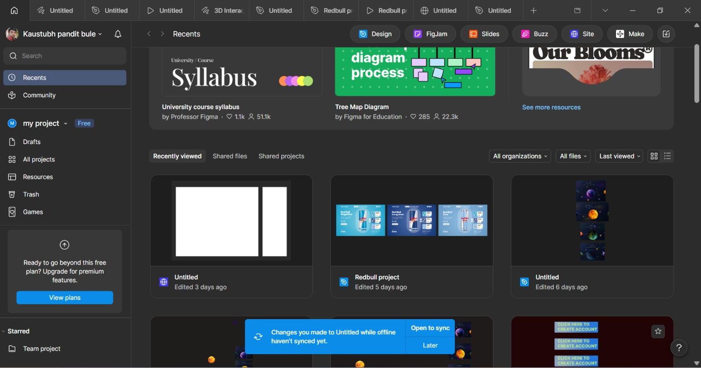
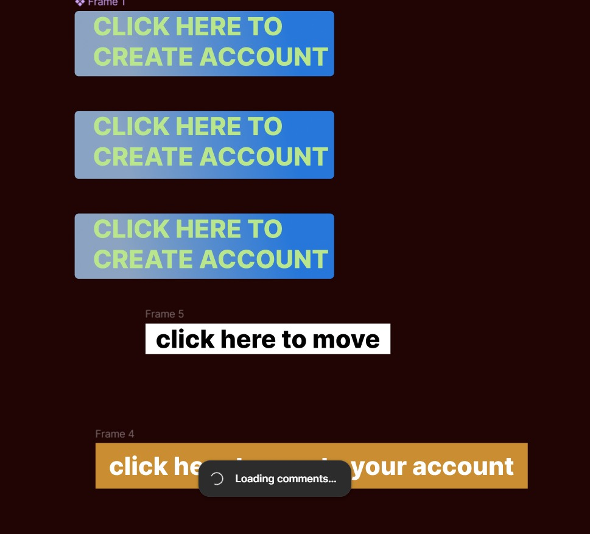
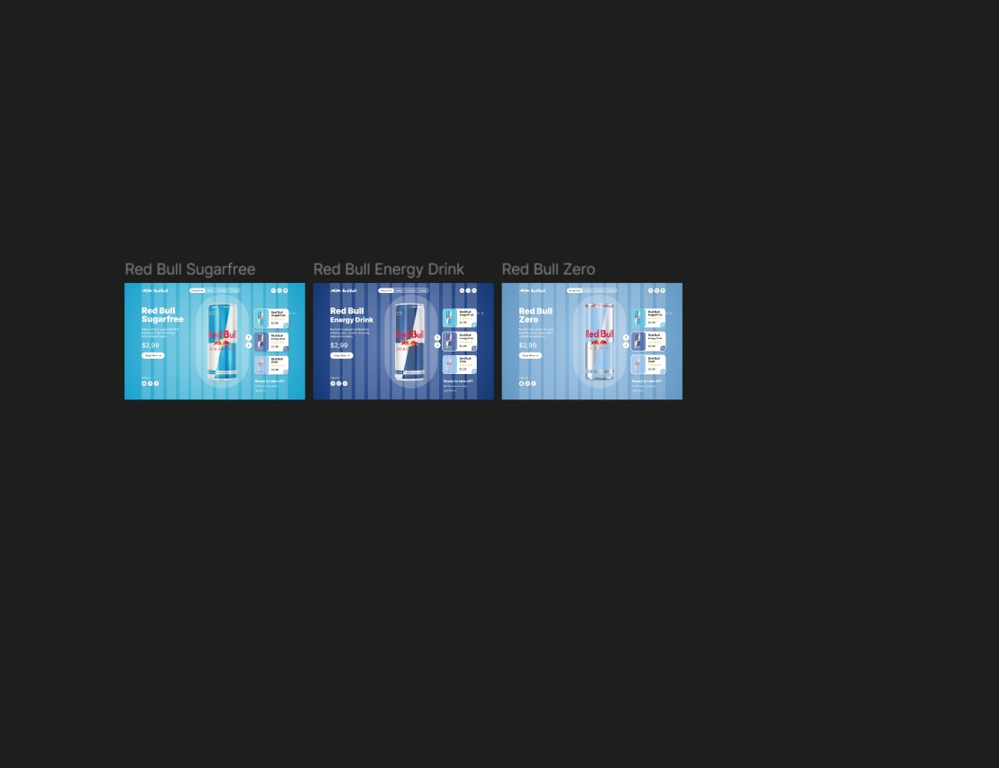
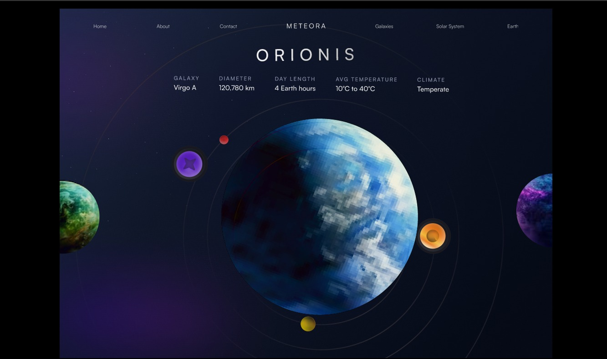

Getting Started with Figma
On Day 1, I logged into Figma for the first time and set up my workspace. I explored the dashboard, understood how projects and files are organized, and got familiar with the interface. I also went through the foundational theory of UI/UX design — understanding the difference between User Interface (UI) and User Experience (UX), the importance of user-centered design, and key principles like visual hierarchy, consistency, contrast, and alignment.
- Logged into Figma and explored the dashboard & recent projects
- Understood the difference between UI and UX
- Learned design principles: hierarchy, contrast, alignment
- Browsed community templates and resources in Figma

Hands-on with All Core Figma Tools
On Day 2, I explored all of Figma's core tools practically. I learned how to create frames for different device sizes (MacBook Pro 16", iPhone, etc.) and work within the canvas. I practiced drawing basic shapes — rectangles, ellipses — and understood resizing, aligning, and positioning them. I also learned how to add and style text, choose fonts, apply fill colors, and work with the properties panel.
- Created frames for MacBook Pro 16" and mobile screen sizes
- Drew and resized rectangles and ellipses (200×200 dimensions)
- Styled text with different fonts, weights, and sizes
- Applied solid colors and fills to shapes
- Used alignment and distribution tools for clean layouts

Starting the First Real Design Project
On Day 3, I started my first real Figma design project — a Red Bull Advertisement UI. I set up the project file, chose the right frame, and began designing the layout with the Red Bull brand color theme. While building this project I discovered many new Figma features like grouping elements, using the layers panel, working with components, and importing images. This was a great hands-on experience applying design principles to a real product.
- Created the Red Bull Ad project file and set up frames
- Established brand color palette and visual theme
- Worked on layout composition and visual hierarchy
- Learned grouping, layers panel, and image import
- Explored button frames with different text styles

Completing the Project & Adding Animations
On Day 4, I completed the Red Bull Advertisement design — creating 3 product variants (Sugarfree, Energy Drink, Zero) each with their own frame and color identity. I then switched to Prototype mode and learned how to connect frames with interaction triggers. I explored various animation types — Smart Animate, Dissolve, Slide In — and built an interactive flow that lets users switch between the three Red Bull variants smoothly.
- Completed 3 Red Bull product variant screens in Figma
- Applied consistent branding across all 3 frames
- Switched to Prototype mode and connected all frames
- Added Smart Animate and Dissolve transitions between screens
- Previewed the full interactive prototype flow

Building My Own Original UI Design in Figma
On Day 5, I applied everything I learned throughout the module to build my very own original UI design project in Figma. This was an independent creative exercise where I chose my own concept, designed the screens from scratch, and focused on making the UI visually appealing, consistent, and user-friendly. I put into practice all the skills — frames, layout, typography, color, components, and prototype interactions — learned over the previous 4 days.
- Conceptualized and planned an original app UI idea
- Designed screens from scratch using Figma tools
- Applied consistent color palette, typography, and spacing
- Added prototype interactions for the user flow
- Completed a fully interactive prototype of my own design
